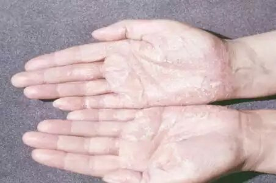

Здравейте! Казвам се Лили Петрова и съм на 36 години. Реших да ви разкажа моята история. Моята история за това как се справих с псориазиса. Темата е малко чувствителна, особено за жените. И не е лесно да говоря за това... Псориазисът е тежко медицинско състояние , което също има естетическо отражение. Животът може да се превърне в мъчение, когато имате грозни петна по кожата. Освен сърбежа, подуването и лющенето ще трябва да се справяте с всички, които говорят зад гърба ви. Много хора вярват, че псориазисът е заразна болест. Следователно тези, които страдат от псориазис, лесно се изолират от обществото и не могат да водят нормален живот... Аз съм в такава възраст, че е доста трудно да бъде наранена от мнението на другите, но дори и за мен беше трудно...
Историята започва преди около пет години. Бях под душа, когато усетих някакви струпеи по кожата, в областта на лакътя. Това бяха първите засегнати области. Изглеждаха като розови подутини и бяха покрити с мъртва кожа. Намазах обилно с крем. Мислех, че е само суха кожа, следствие на моите неадекватни грижи. Имам предвид - винаги се грижа за себе си и внимателно избирам козметиката и продуктите за лична хигиена, които използвам. Никога не съм имала алергии.
Необичайните петна започнаха да растат след около три седмици и се притесних. Отидох на дерматолог веднага. След внимателен преглед и анализ на резултатите диагнозата беше псориазис. Не можех да повярвам! Лекарят ми предписани обичайната терапия. Хормонални лекарства (мазила и лосиони) и хомеопатична програма (вана с морска сол и билки). Лечението дава само временни резултати. Плаките се обезцветиха и другите симптоми (сърбежът и възпалението) изчезнаха. Въпреки това когато намалих ударните дози и започнах поддържащо лечение, всичките ми проблеми се върнаха. Освен това се оказа, че след хормоналното лечение, плаките започват да се увеличават по-бързо. Всичко това продължи около 2,5 години. В крайна сметка псориазисът се разпространи върху цялата повърхност на двете ми ръце. Бях в шок, когато видях признаци на болестта и по краката ми и задните части! Направо мислех, че ще полудея. Положението стана още по-лошо заради паниката ми. Когато видях коментари на други хора, които също страдат от псориазис, още повече се притесних. Някои не могат да се излекуват в продължение на 15-20 години. Други живеят с този проблем цял живот...
Аз трескаво купувах различни продукти срещу псориазис от аптеките. Кремове, капки, спрейове, всичко... Опитах алтернативни методи на лечение, като спа с някаква специална кал. Веднъж дори се опитах да „прогоня“ болестта с баене. Разбира се, нямаше абсолютно никакъв резултат. Моят проблем засягаше живота ми и работата ми все повече. Чувствах се неудобно от самата мен и моя външен вид, което ме направи раздразнителна, агресивна и свръхчувствителна. И нямаше светлина в тунела...
Чух за от една приятелка. Тя е голям фен на природните лечения, които не включват "тежката артилерия" като хормони. След всички мои експерименти с лекарства, не беше трудно да ме убеди. Купих веднага от уеб сайта на производителя и започнах курса на лечение. Нямах какво да губя, с изключение на време и енергия... За да бъда честна, след толкова много неуспешни опити за лекуване, вече не се надявах на положителен ефект. Думите на моя лекар, че натуралните продукти са безполезни за проблем, който хормоните не успяват да преборят, бяха оставили дълбока следа в съзнанието ми.

След 10 дни лечение с изведнъж забелязах, че почти не изпитвам сърбеж и парене вече. Понякога дори напълно забравях, че имам псориазис... Видът на кожата ми също се беше променил. Плаките бяха започнали да избледняват и червенината беше изчезнала. Кожата ми не се лющеше и беше гладка и мека пак! Не можех да повярвам! Намазах върху някои нови плаки и те спряха нарастват, а после съвсем се успокоиха! Напредъкът, който постигнах с , наистина ме впечатли и с радост продължавах. След един месец нямах никакви оплаквания! Кожата ми беше значително по-добре. Нямах сърбеж, болки и неприятно чувство.
След около три месеца успях да постигна сериозен напредък. Почти нямах нови плаки, а старите не ме сърбяха ужасно, както преди. Изобщо кожата ми имаше много по-добър вид, беше подхранена и добре хидратирана. Продължавах да използвам веднъж на всеки два месеца. А може би дори не е необходимо. Така или иначе, няма противопоказания или странични ефекти, така че може да се използва дори и след приключване на лечението. Нямам думи да опиша колко съм щастлива! Честно казано, искам моят опит да помогне на всички, които се нуждаят от специално лечение, за да започнат нов и здравословен живот без ужасните симптоми на псориазиса!

Сега ще споделя с вас повече информация относно състава на продукта. съдържа набор от специални съставки.
- Масло от овесени ядки
Това е най-добрата патентована формула на базата на овесени ядки. - Каприлов/капринов триглицерид
Това е естествено масло, което се добива от кокоса, добре известен с благотворното си действие върху кожата. То успокоява и овлажнява без да оставя мазно усещане. - Бадемово масло
Намалява възпалението и контролира работата на мастните жлези. Има успокояващ ефект. - Урея
Въпреки че уреята се синтезира, формулата напълно съответства на естествената. Уреята помага за хидратацията и се използва широко в козметиката, защото лесно прониква в клетките на кожата. - Бизаболол
Естествен продукт на базата на лайка. Притежава слаб сладък флорален аромат. Въздейства успокояващо върху кожата, има бактерицидно и противовъзпалително действие. Ускорява процеса на заздравяване на кожата.
Тези съставки, в комбинация с останалите, защитават кожата от външните дразнители, овлажняват оптимално кожата и са идеалната формула за борба с раздразнената, сърбяща или по-чувствителна кожа.
Важно е да разберете, че автентичната формула на съдържа само истински съставки. може да се поръча само от сайта на производителя! В противен случай рискувате да купите фалшив продукт, който може да влоши състоянието ви.
Уникалното съдържание на позволява да се използва на всеки етап и вид на болестта. Комбинирането с традиционни методи на лечение е възможно. Между другото моят лекар също се изненада от ефекта на . Сега той го препоръчва на всичките си пациенти, които се борят с неприятните симптоми на болестта.
Коментари
Елена, 30
Blagodarya za infoto! 6te opitam!
Вики, 25
в моя случай псориазисът се прояви за пръв път преди 9 години... Опитах толкова много неща!!! Защо моят лекар не ми препоръча този продукт? Нов ли е?
Лили
Продуктът всъщност е съвсем нов. Може би вашия лекар просто не е чувал още за него.
Ева, 33
Да, важно е да се купува само истински ! За съжаление веднъж си купих от другаде и състоянието ми се влоши! Този продукт не се продава в аптеките...
Лили, 36
Абсолютно необходимо е да се ползва истинския продукт, за да се стигне до успешно излекуване. рядко се намира в аптеките. Не се прави в големи количества. Следователно най-добрият вариант е да поръчате от сайта. По този начин е по-бързо и по-сигурно!
Мишо, 39
Лили, определено проявявам скептицизъм към този тип лечения. Наистина не вярвам, че чрез смесване на масла и разни антисептични химии може да се лекува псориазис! Вие или сте имали лека форма на заболяването или изобщо не е псориазис!
Лили, 36
Мишо, диагнозата е поставена от уважаван и надежден лекар. Мога да се съглася, че състоянието ми не беше безкрайно тежко. Отидох на лекар веднага след като открих първите симптоми. Запознах със случаи, в които е помогнал на много хора, които страдат от псориазис повече от 10 години, да облекчат симптомите си.
Мария, 28
Аз също съм на ранен етап на болестта. Ще опитам със сигурност! Не искам да пренебрегвам положението си.
Андрей, 51
Съгласен съм с Лили! може да помогне на всеки, независимо от стадия на заболяването. Взех моя урок. Подлагала съм се на безполезни лечения 7 години. След като започнах да използвам , почувствах облекчение още след първия месец! Препоръчвам и на вас да го използвате!
Валерия, 47
Трябва да кажа, че помогна на съпруга ми се да се справи с псориазиса. С нищо друго не успяваше да се отърве от мъчителния сърбеж. беше перфектен за него!
Ани, 35
Благодаря много за споделения опит! Страдах от депресия, като и вие... Моето заболяване напредва и конвенционалните методи на лечение не помагат никак.
Лили, 36
Ани, не се отказвайте! Всичко ще се оправи! Вярвам, че този лек ще ви помогне със сигурност!
Алекс, 19
Може ли да използвам , ако имам алергия към бадеми?
Лили, 36
По-добре обсъдете това с вашия лекар! Не мога да припомни ситуация, в която да е причинил алергична реакция. Сред хората, които използват , има и много с постоянни алергични симптоми.
Катя, 44
Как тези масла лекуват причината за болестта? Тези следи по кожата са само признак...
Лили, 36
Маслата не лекуват. Те помагат на тялото да се справи с проблема. Те настройват метаболитните процеси на кожата, осигуряват витамини и минерали, подобряват микроциркулацията и др. Като цяло предоставят по-добри здравни условия.
Димо, 29
Изглежда добре, ще опитам! Сърбежът ме дразни много, както и да живея с това бреме!
Тони, 40
Признавам, че ми помогна много, но не толкова бързо, колкото във вашия случай. Преди това страдах от псориазис повече от 10 години.
Иван, 37
Моето лечение с продължи 6 месеца. Наистина не съжалявам! Това е единственият продукт, който постепенно направи живота ми много по-лек. Никой друг продукт не е имал такъв ефект, даже и след цяла година употреба.
Ангелина, 18
Историята ти ми помогна много. Ще започна лечение и се надявам най-накрая да се почувствам здрава отново!
Сандра, 28
Защо продължавате да използвате след като сте се излекували? Необходимо ли е? Може да се пристрастя?
Лили, 36
Разбира се, че не е необходимо! Не може да настъпи пристрастяване. В моя случай бяха засегнати големи области. Така останаха плаки по тялото ми. Бих казала, че съм прекалено предпазлива, въпреки че лекарят щи каза, няма за какво да се тревожа.
Карина, 48
Благодаря ви, че споделихте историята си! Изведнъж започнах да вярвам, че мога да се отърва от псориазис! И аз мога да опиша после моя опит от употребата на !
Georgi, 59
Opitah minalata godina pomogna mi mnogo porepora4vam na vsi4ki
Димитър М, 32
Майка ми използва това лекарство от един месец. Много е доволна! Няма нови петна, а старите са избледнели и постепенно изчезват. Наистина се надявам, че ще помогне.